It’s a crappy-assed blog title. I know.
When I was asked to join MAJestic, I was not some smuck on the street. Instead, I was in the middle of training to be an elite Naval Aviator pilot. The decision to join MAJestic was an important one, and should not be discounted as some trivial event. It was a “red pill” moment that changed me, my life, my career, and my future.
Here, I relate how the organization was presented to me, and my decision train used to accept membership.
For those of you who are unawares, MAJestic is program that is not supposed to exist. It is “tin-foil hat” conspiracy stuff. It is just the type of “nonsense” that the big software giants like Facebook, Google, and Twitter are doing their best to suppress. Even Obama had to say that there is nothing there. You can believe him, right? After all, he was the most honest President since George Washington chopped down that pesky cherry tree.
MAJestic is a waived, unacknowledged, special access program that operates as a carve-out within American industry. It was authorized by the President of the United States and handles all things related to extraterrestrials. Like 007, the IMF, and U.N.C.L.E. all fictional television and movie organizations, this organization does not officially exist.
This is the story, and my narrative, on how I was convinced to leave my Naval Aviator training and join MAJestic.
We begin this narrative at NAS NASC Pensacola, Florida. It was early June 1981. I was in the United States Navy. I was in training. It was hot, sunny and humid. I was in AOCS. My class, 21-81 had settled in and were comfortably involved in a procedure that would manufacture us into bona fied Naval Aviators…
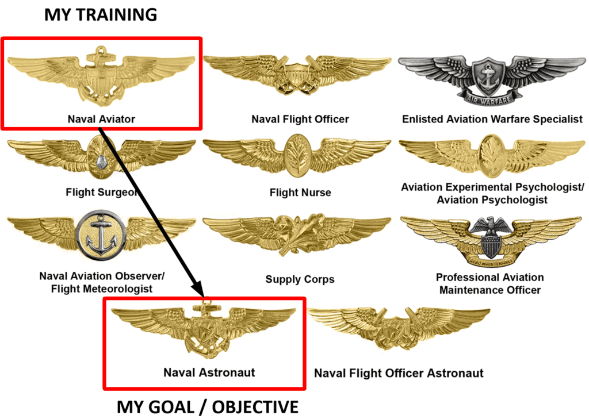
Special Call-out During Roll Call
Of course, every morning, after morning PT and breakfast, we would line up for roll call. Here, if we had medical issues or anything that we needed to address, we would announce it here. Also, any announcements that we needed to here would be made.
It was a comfortable routine, and aside from the one time when I had an eye infection, it was uneventful. (My left eye. I had an infection in my tear gland. I have no idea how it occurred. Probably bacteria from the swimming pool, that I failed to rinse off properly.)
So imagine my surprise when one day, during Monday morning inspection, I was called out and told to go to the Commander’s Office. Standing next to the DI (Marine Corps Drill Instructor) was an upperclassman who was assigned to collect me and escort me to the Commander. This surprised me, and I was extremely nervous.
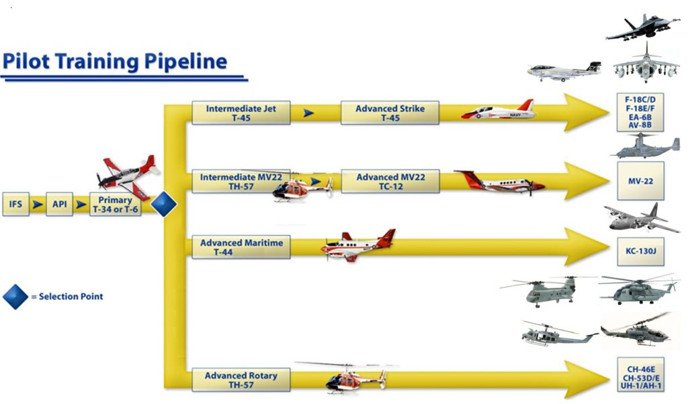
I remember the date well. It was Monday in early June 1981. The morning was sunny and tropical as only Florida can be during early Summer. (We had already done morning PT, and had breakfast.) We stood there at ease and I was called out of the ranks to accompany the upperclassman to the Base Commander’s office.
We never saw or visited the Commander. That was the Holiest of Holies. The closest that we ever got to those in charge were the officers who taught the classes to us, the various drill instructors, or the occasional officer that we would run into during our periodic events. We never got to have a meeting with them, and most especially, never one in person, alone. So it was a real surprise and an amazing event for me. I was curious, stunned and extremely nervous.
I immediately fell out of line and walked with the upperclassman. When we were out of earshot I asked him what was going on, but he told me that he didn’t know. He said that he didn’t think it was anything bad because I did nothing wrong. So, he reasoned, that it must be a good thing. But what it was, he did not know.
We walked side by side. I was on the left and he was on my right. We looked straight ahead with eyes fixed forward as was our training. We talked in low voices in a calm and friendly manner, not giving any indication that we were communicating in any manner what so ever to an outside observer.
He led me down the street to the Commander’s Office. We went in through a side door near the back, and he dropped me off in the hallway after reporting to the aide there. He then wished me good luck and left.
At the Commanders office was a bit of activity. There were a number of officers chatting inside the office which was obvious because the door was open, as well as a small contingent who was leaving, but stopped to banter about in front. Since he was busy in his office chatting with some other officers, I waited outside in the hallway. There were perhaps three wooden chairs in the hallways across from his office, and I sat in the middle one.
It wasn’t long, perhaps five minutes later, when I met another Naval Aviation Officer Candidate from another class, and we waited patiently outside. For practical purposes, I will not reveal his name. But instead will refer to him as “Sebastian”. Neither of us had any idea what was going on. It was a mystery to both of us. So we just shrugged our shoulders and waited on the chairs in the hall outside his office until he was ready to chat with us.
We waited for about seven to ten minutes. We just sat outside in the short hallway that was outside his office.
Eventually he finished his meeting and walked outside his office with the other officers. After bidding them farewell, he turned to us and waved us inside. His office was huge. All the offices were pretty big, but his was the size of small banquet hall. He led us into his office and towards his desk. As we approached his desk and as we started to sit down, the door opened and we were interrupted by yet another officer wanting to discuss some matter of medium importance. The Commander excused himself and went to the officer. Chatted to him for a few minutes and then returned.
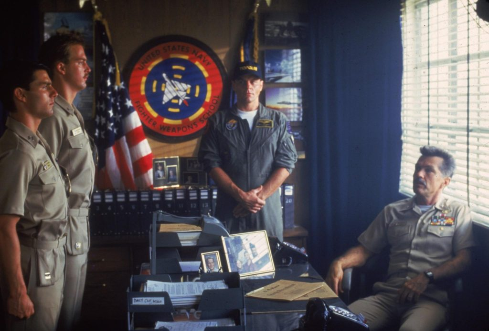
The Commander was impressive. It was not his size, for he was shorter than us, nor was it his appearance. He was approximately 45 years old, give or take five years, and had the beginnings of white hair at his temples. He had a round face and a good friendly smile with eyes that contained an intensity that I had never seen previously. He was an engaging fellow and I immediately respected him. It was not about his office, or the uniform that he wore. I respected him in the way that he carried himself. He held his role and position with dignity, honor and respect.
Before we had a chance to get settled he motioned for us to follow him.
He said “Perhaps it would be best if we go elsewhere…” and we left his office. He said a few words to the aide waiting outside his office (Obviously, the aide was given instructions that we were not to be disturbed, and that he should handle various issues that were on-going at that time.). He then led us through the hallway to the door at the end. Opening it led to a small parking lot. We exited to a cement platform, went down the stairs to the back of the building and got into a small car with government license plates. I sat in the back while the Commander drove and the Sebastian sat shotgun up front.
“Sitting shotgun” is an American slang that refers to riding next to the driver of a vehicle. It is derived from the days of the Westward Expansion in America where Stage Coaches would transport people, money and goods across large distances frequented by bandits. The person riding next to the Stage Coach driver would carry a shotgun to defend the crew from bandits and other criminals.
In case you were not aware of it, military bases are huge. Buildings are often spread apart with miles separating them. In order to move about a person can either use their own car, or if they have the privilege, can access the base car pool.
As the commander of the base, he had access to the car pool at his disposal, and he used it. The car he drove us in that day was a plain sub compact, and painted an ugly light blue. Not that it is important, but I think it was a General Motors sub compact of some obscure (to us now) brand and style.
Joining MAJestic
“Twenty years from now you will be more disappointed by the things that you didn't do than by the ones you did do. So throw off the bowlines. Sail away from the safe harbor. Catch the trade winds in your sails. Explore. Dream. Discover.” - Mark Twain
We didn’t know it then, but we were being considered to join one of the most exciting programs ever conceived by the United States. We were chosen out of flight school due to our intelligence, experience, and potential. This program was NOT some super-secret military operation used to engage cold war operations against another nation.
This program was NOT about war, fighting war, or combative strategies against other nations.
I’m going to split from my narrative for a spell. This is just to put everything in it’s proper context.
Some comments about war. Under the surface of almost every sociopolitical and economic event in the world there burns an ever-raging, but often unseen, war. It's often a HIDDEN war. It's not fought with tanks, soldiers, battleships and missiles. Instead it is fought behind the scenes, and through manipulation of the public. This war is conducted covertly. This war, at least for now, is fought with fiction and with truth, with journalistic combat and with quiet individual deeds. It is defined by two sides which could not be more philosophically or spiritually separate. Side "A" - Globalists On one side is a pervasive network of the wealthy and powerful. They believe that they can dictate the direction of the world or a given nation. This network is often loosely organized (we assume, though indications are that the Obama Presidency had indeed organized and weaponized it). This side consists of corporate moguls and other monied elites, banking entities, international financial consortium's, think tanks and political puppets. They are the rich and the powerful. They are the people who eventually (though their surrogates and proxies) raise your taxes. They have made arrangements to place the burden on responsibility on you. They have decreased your standard of living, and make everything subject to fees and tolls. This includes requiring you to have a permit to fish, a prescription to get medicine, and registration to get a license to work. These people are the ones who have done that. Oh, certainly not directly. Through their legions and armies of paid surrogates. They work tirelessly to reshape public psychology and society as a whole into something they sometimes call the “New World Order”. It is a globalist ideal. Where they believe that once the world has one single government, true harmony can be realized... by THEM. The NWO idea or concept is of a completely and scientifically centralized planet in which they control every aspect of government, trade, life and even moral compass. I often refer to them simply as the “Globalists,” which is how they at times refer to themselves. In the globalist’s worldview, the idea of the United States of America as a sovereign nation, One Nation Under God, is an anachronism. It is but a quaint artifact left over from an earlier age. We are all citizens of the world, Obama proclaimed in Berlin in 2008, united by our participation in the brave new “global economy.” Side "B" - Liberty and Freedom Movement On the other side is a movement that has developed organically and instinctively, growing without direct top-down “leadership.” This side has it's various teachers and activists. All of whom are driven by a concrete set of principles based in natural law. It is composed of the religious, the agnostic and even some atheists. It is soldiered by people of all ethnic and financial backgrounds. These groups are tied together by a singular and resounding belief in the one vital thing they can all agree upon — the inherent and inborn rights of freedom. I call them the “Liberty Movement.” There are those who think they do not have a dog in this fight. These are the ignorant, the blissful and the mentally impaired. These people are those whom ignore it and those who are completely oblivious to it. However, EVERYONE can and will be affected by it, no exceptions. This war is for the future of the human race. Its consequences will determine if the next generation will choose the conditions of their environment, or not. The conflict will determine if one has the ability to reach their true potential as individuals or if every aspect of their lives will be micromanaged for them. Micromanaged, by the way, by a faceless, soulless bureaucracy that does not have THEIR best interests at heart. A soulless bureaucracy that exists at the pleasure of the few that control the globalist society. Quick Summary Technology has developed to a point where we can control and genetically engineer our offspring. If the world is one where freedom and liberty reigns, our offspring will cohabit a world equally with others. However, if the world is controlled by a globalist society, controlled by a precious few, then the world will be genetically engineered into a stratified society. There would be classes of people, genetically mandated. They would be bred to be complaisant as sheep. Some would be genetically designated as warriors. Some as docile workers. Some as breeding machines. While others as disposable automatons. It would be a world where there would not be any opportunities to leave the life-prison that you were genetically programmed into at birth.
Anyways, sorry for the short digression. Let’s stay on point. Now…
Back to my narrative. It’s a sunny day, and I am getting into a light blue sub-compact car with the base commander with my companion Sebastian.
At that time we had no idea what was going on.
At that point in time, we were still in training. Our world was one of drills with the DI, gouging information, meeting physical exertion tests,and qualifying to fly the new F/A-18 that was just being deployed.
We did not know what the purpose was for the Base Commander to speak to us. We hadn’t a clue.
The key to everything is your attitude. A positive attitude is an asset in unexpected situations. Not all unexpected events are negative. Sometimes, what seems like a problem, or even a disaster, could be a blessing in disguise. A negative event can awaken ambition, motivation, and persistence, which would lead to progress and success. A positive one can build your life. However, what happens when something unknown AND unexpected occurs? What happens when you have to make decisions based on strange situations and unknown results? How would you, the reader, be able to handle the events?
Riding with the Base Commander
“It's not hard to decide what you want your life to be about. What's hard, she said, is figuring out what you're willing to give up in order to do the things you really care about.” ― Shauna Niequist, Bittersweet: Thoughts on Change, Grace, and Learning the Hard Way
The Commander drove us away from his office and once on the road he began to make small talk. It was the kind of chit-chat what you would expect. He asked us how did we liked our training, and what did we think of the base. He asked us about our interests and how different Florida must be from where we came from. He had read our dossiers and so had a pretty good grasp of where we came from and what motivated us. After a few minutes of this small banter, he then asked abruptly
“So, you’re probably wondering what’s going on here, aren’t you?”
And, of course, be both agreed. (I, myself, sat up in the car seat and leaned forward.) We told him that we hadn’t a clue on what was going on. So we started to pepper him with questions; respectfully.
We began to chat in this manner as the subcompact drove along the base roads.
He told us that we would be able to speak more frankly and freer in his “other “ office. However, for now he would be able to discuss some general queries from us. The first question was obvious. “Why was he talking with us, and what was it all about?” To our surprise, he answered this question quite readily.
In a calm and clear voice, he stated that he wanted to ask us to enter in a new and “different” program. It was a program of special importance and significance. He said it matter of fact; as if he had done this kind of thing many times earlier. (Maybe so, but not for OUR particular program.)
I immediately stopped looking out the window and moved to the center of the back seat so that I could face the Commander and Sebastian. (I was sitting behind the commander on the left side. Sebastian was in the front passenger seat.) I looked at the Commander who was driving and wondered what he meant. I leaned forward and rested my arms on the back of the seat and, to be quite honest, was enraptured in every word that the Commander had to say.
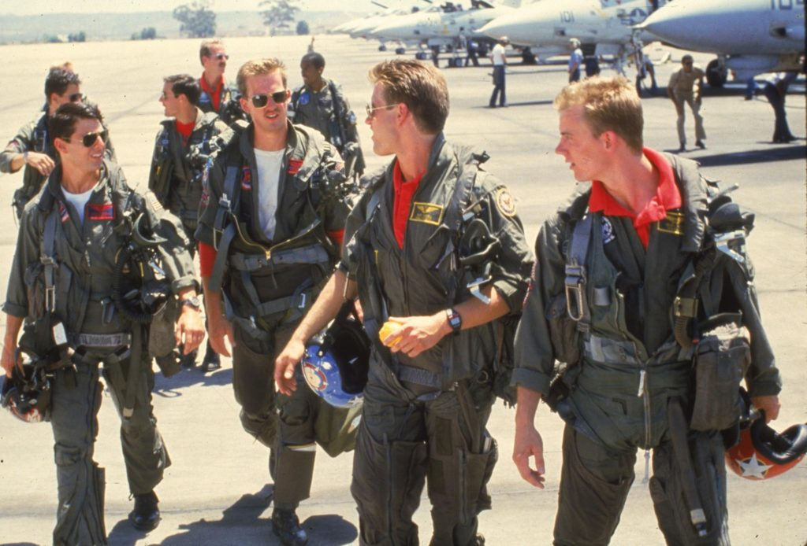
The answer that the Commander gave us was truly stunning and it just begged an entire armada of questions, so we then asked a secondary follow up question. “Would we be flying?” And to our surprise, the answer was “No”. (The answer was absolutely and definitely; “NO”!) My heart sagged at that moment, and I was rather disheartened.
I sat back in my seat and then looked out of the left side window. I watched the trees pass by. I felt a big pit in my stomach. As I was told that the most important person in my life at that time… just told me that he did not want me to fly. He wanted me to do something else.
Something else?
Some THING different…
Which then begged third question, since we had to pass all kinds of tests and trials to be able to fly high performance jets, why select us? What benefit would it be for us, and why were we special?
We still couldn’t understand why, so we asked again. “Would we be flying in space?” (After all, Ronald Reagan’s space based weapon systems were all over the news. Perhaps this program was associated with it.)
The Strategic Defense Initative. This was Ronald Reagan’s plan to counter the Soviet Union ICBM force. When the truth was really to provide state of the art weapons systems to counter vastly superior extraterrestrial forces, if a need ever materialized. His plan was fought and opposed most aggressively by the democrat party, who (publicly) believed that it was a waste of time.
Again, his response was “No. You will not be flying in any capacity.” This was a big letdown, and we were quiet for a few minutes letting this entire “handful” sink in.
It was a huge letdown. It silenced all subsequent questions for about two to three minutes.
When I was younger, not more than five years earlier, I would watch vintage science fiction movies. In these movies were huge complexes involving space craft. There would be large secret installations underground with massive blast doors and a small army of security forces protecting the technical and scientific mysteries inside.
The world of secret projects that I knew of was colored by the television and movies that I watched.
I had no idea of the real world, only what was spoon fed to me during the cold-war era Hollywood. I really hadn’t a clue. Not one. In that world, the fictional world of television and Hollywood, men wore single one-piece coveralls, often silver in shape, had colorful access cards that they pinned to their chests. They carried guns and went on exciting and strange adventures. Often these adventures involved faraway lands, space travel, and undersea adventures.
I could not but help to think that perhaps, in some more realistic way, that we were being asked to join such an organization. After all, we were not just some high school dropout who enlisted in the service. We were specifically selected; highly educated individuals who had proven to be special in various fields of endeavor.
Seriously, you don’t pass astrophysics courses at the top of your class, be able to design complex rocket motors, and train to fly multi-million dollar high performance aircraft just to be considered a “lab rat”, or a disposable “experiment”, or maybe a “first strike” programmable zombie for covert operations. There was something going on, and we hadn’t a clue as to what it was.
In our mind, it was a military or an exploration matter. For all that we knew was either the world of the military conflict against those dastardly communists in South East Asia, or the absolute exploration of space. What else could it be?
Indeed, the true and real story behind all of these public interests is an interesting one. While we on earth argue and war against each other, we are oblivious to what is really going on. What is really going on is something else entirely. Earth is not some planet carved up into nations by the smartest species in the universe. It is a special training ground. It is a nursery. In fact, it is a nursery for humans to develop their sentience within. Humans cannot really be able to "graduate" and leave our nursery until we have a unified sentience. Currently humans possess one of three sentience types. There is "Service to self", "Service to others", and "Disrupted". What is going on, and (perhaps) one of the major reasons for my involvement within MAJestic was to assist in sorting out the sentience to a point that one (it does not really matter which one) would dominate. The "Globalist" objective has always been to have humans adopt a service-to-self sentience. That requires a number of objectives. One of which is a world-wide-government, a massive surveillance organization of humans controlling each other, and a pacified and disarmed populace. Their ability to achieve these goals is easily determined. Which political party and which members support these objectives? While the extraterrestrial species that I am familiar with have no interest in politics, they are very interested in the thoughts and behaviors of the leadership in each political party. As they manipulate them to achieve their own goals. In general, the Democrat party is the easiest to manipulate, as they possess the strongest self-serving sentience. The Republican Party is only slightly inferior, as there are numerous “hold outs” for patriotic, historical, ethics, or religious reasons. The Democrat party not so, their GOD is the US dollar. Occasionally, a patriot, or person with strong religious convictions appears on the political scene. Their belief structure is stronger than their self-serving greed. They are hard to control, and difficult to manipulate. Ronald Reagan was one such person. Could Donald Trump be another?
He knew what we were thinking. So after a few minutes, he added
“This is bigger than flying. This is much more important, and much more valuable than just being a pilot.”
That got us thinking, although we were still very disappointed that we weren’t going to fly. Both of us dreamed about flight, and (for myself) space exploration. This would have to be good. In fact, in my mind, I thought that he was lying.
The truth be told; I actually thought that somehow we would be involved in something having to do with space travel. Perhaps we would be involved as mission specialists instead of pilots for some kind of militarized space shuttle. Alternatively, that, perhaps we would be assigned some kind of very special technical role regarding this. It was all so mysterious and exciting.
I just could not conceive that anyone would take us high achievers and assign us anything short of a flying role. We had fought hard for that role. We had studied diligently and had exceeded. It was not something that you hand out to other people in a haberdashery manner. We were selected, we were achievers, and now the Base Commander does not want us to fly. What was this all about?
We felt like children expecting presents under the Christmas tree, but instead getting socks and being told “not to worry; that they were warm socks”.
I watched the world go by as he chatted. Somehow, I just wanted to believe that we were going into space. I wanted to believe that somehow we would still be offered an opportunity related to flying. It was just simply inconceivable that you would take specially selected, performance candidates such as we were and assign us to something of less value and excitement than flying high performance jet fighter aircraft.
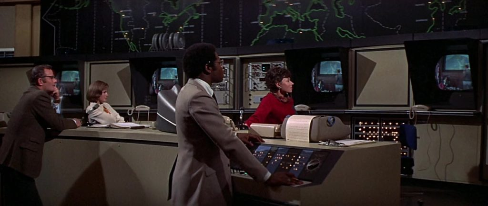
After all, we were surrounded with the trappings of aviation. Everyone around us was either a pilot or supportive of the aviation organization. I was inconceivable that we would switch from what was obvious to the obscure. Inconceivable. It made no sense. Nothing would be better than a fighter pilot slot. Nothing. N-O-T-H-I-N-G! That was the most coveted position in the US Navy.
(And I had it. It was mine, and all I had to do was complete less than two months of training to get assigned an aircraft type. Why would I ever want to give that opportunity up?)
It was absolutely impossible that there would be something more important, more significant, and more deserving of our skills and talents. In my mind, it was very, very difficult to imagine anything better than flying. The only thing that could possibly be better would be space travel, and that is what I believed in my heart of hearts, and what was in our future.
I sat in the back and mused what this must all be about. It had to be about something stupendous. It just had to…
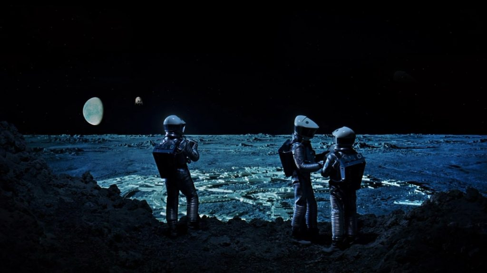
We continued to drive. We rode on the base upon the base roads that took us along the bay and then into some shady glens associated with other sections of the base. We continued talking, but it was mostly Sebastian and the Commander who were talking. I sat in silence, and looked out the left window at the trees as we drove by. What could this be all about I wondered, and why were we chosen? These were mysteries with no easy answers and as we drove my mind twirled around in all kinds of directions.
After a while, he turned into the facility at NAMI. And after ten minutes or so we entered the smaller gated region known as the ELF experimental center. The Commander showed his identification, and signed a clip board and then (once the gate bar was lifted), drove in.
This was the exact same area where I had been tested earlier (As discussed in another post.). When we first entered this area, with the base Commander, Sebastian remarked that we were going there to become “secret-agent Elves for the USN”. It was funny. (…and perhaps, a prediction of the events that would follow…)
Both of us were nervous, and excited. We didn’t know what kind of program that we would be joining, and we didn’t know how secretive it would be. That comment heralded the events to follow.
Indeed, we didn’t know what to expect.
Here was the head of the base, picking us two out of the hundreds of the “elite” at the base, and driving us personally to a high security area to discuss a special and (perhaps) top secret program that he wants us to participate in. What could it be we wondered? Indeed, what exactly could possibly be worth us giving up our valued, treasured and indeed coveted pilot slots? We had not a clue, but we were most certainly soon to find out.
Discussing Our Selection as Volunteers
“He smiled understandingly-much more than understandingly. It was one of those rare smiles… It faced–or seemed to face–the whole external world for an instant, and then concentrated on you with an irresistible prejudice in your favor.” -The Great Gatsby by F. Scott Fitzgerald
This gated area, at least as far as we were concerned, was nothing more than a cluster of normal buildings surrounding a medium sized warehouse (of average construction and shape), and a side parking lot. Inside the ordinary shaped building housed all the diagnostic and medical equipment necessary for probe implementation (As discussed later.), and ELF portal transport (more about that and other things later).
The Commander parked in a parking lot off the side of the main building and we all got out of the car. I got out on the left side and followed the commander closely. Sebastian was behind walking briskly to catch up.
We entered the main building through a side door and found ourselves in a long well-lit corridor. It was just another typical government building on the base. It was clean and well maintained with a fresh, well-conditioned feeling, much like that of a doctor’s office. The hallway was not long, but it was a little narrow.
Most hallways have room for people to be able to walk side by side down it comfortably. This one was narrower than that and forced us to walk a little behind and to the right of the one in front of us.
We walked down it. It was a short walk to the Commanders “other” office. After perhaps 30 seconds, he produced a key and then unlocked the door and led us inside.
This office was much smaller than his regular office.
Instead of a carpeted floor with a long rug forming a pathway to his desk, it was a bare bones, functional, no nonsense setup. It was a small office by all accounts, consisting of a plain linoleum floor (White tile with black flecks; a very common and typical flooring for the time.), a metal desk, and file cabinets on both sides of the tiny room.
While the metal desk was typical of those office decks of the 1940’s and 1950’s, this was a large version; designed for managers and other executive officers. It was designed so that we could sit across from the Commander and place our legs under the deck. This is unlike many contemporaneous desks of today when one sitting across from the manager must twist their legs to the side to work on the paperwork on the desk.
Two chairs faced the desk and behind it was a credenza with two flag poles and two pictures of the president and a (unspecified) naval ship on the wall. The room had no windows, but also (curiously) had no phone either.
You would think that everything on a (what we now know as) top secret installation would be state of the art, high technology, and brand new, crisp and clean. At least that is how the movies always portrayed it to be, but that was not the case at all.
The file cabinets were standard Government Issue with a long “L”-iron bar that slides down the front to lock all the drawers in place. They weren’t even the same colors. Some were beige, some were brown, and one was even black. We sat in heavy steel chairs made from grey steel with brown leather cushions; the kind that was manufactured in the 1940’s. They matched the heavy gauge steel desk that the Commander would sit behind. On the wall behind him (to our right) was a picture of then-president Ronald Reagan. On both sides was a flag on a pole. One was old glory and the other was the flag of the United States navy.
In my mind, a Top Secret program would have special sound-proof rooms, and military guards everywhere with M-16 rifles. It would have all sorts of television cameras, and all sorts of bio-metric verification measures.
However, the reality was something completely different.
This was just a secure room, in a non-descript building located on a secure section of the base. There was nothing extra-special about this office, this man or our meeting with him.
The Commander closed the door, and locked it. Then he removed his peaked cap and hung it on the coat rack near the door. He walked to behind the desk, and then motioned for us to sit down after sitting down himself.
His actions and mannerisms reminded me of Captain Nelson from the televisions series “Voyage to the Bottom of the Sea.” (A television show that greatly influenced my feelings regarding the United States Navy. My positive opinions were reflective of the actions and behaviors of the characters on that television show.)
Two chairs faced the desk. The desk faced the door. So once the Commander walked behind the desk, Sebastian took our positions at each chair. I chose the chair to the left, and Sebastian sat in the chair to my right.
The “Sales Pitch” for the Program
“If you always make the right decision, the safe decision, the one most people make, you will be the same as everyone else.” ― Paul Arden
The Commander was friendly and direct. He realized how important this change was for us, and he also realized that for us to make the kind of commitment that he was asking of us, that he had to be not only persuasive, but also brutally honest. He looked us both in the eye with kindness and with a very serious tone. He then cleared his throat and began to talk.
Purpose
He began by telling us directly why we were there. He explained again what he had said to us in the car earlier. That it was true that [1] we were selected out of all the other aviation officer candidates for this program and we were there to discuss this program with him. The program was [2] very special and unique. It was the [3] first of its kind. He told us that we would be the [4] first of a limited (but unspecified) number of members who would participate in it at a later date.
The program was [5] voluntary. We could choose not to enter it. If we chose to refuse the offer to join it, we would simply return back to our class in the barracks. We would continue our education and classes and eventually become Naval Aviators. The meeting would be forgotten and it would be as if nothing had happened. There was no dishonor in refusal.
So we asked him directly, what the program was about. He couldn’t tell us. So we asked him what we would be doing. Again he couldn’t tell us. So, neither of these answers were any help to us, so we asked him again, if we would be doing any kind of flying or participation in an aviation related program. At that he answered that [6] we would certainly not be flying. All of his answers were far from encouraging.

In hindsight, of course he couldn’t really tell us. If it was really so secret, it could not be divulged to anyone not in the program. So it was a catch-22; we could only know what it was if we were in the program. If we were only considering entry in the program, we couldn’t be told what it was. And if we chose not to volunteer, it would be imperative that we know nothing at all about it.
All that we knew was that we were there to be offered the chance to volunteer in a top secret special program [7] authorized by the President of the United States. The details [8] of which could not be disclosed to us at this time. [9] We were asked to decide to exchange our careers as naval aviators for membership in this program. What ever it was… and all I could think of was the images from television…
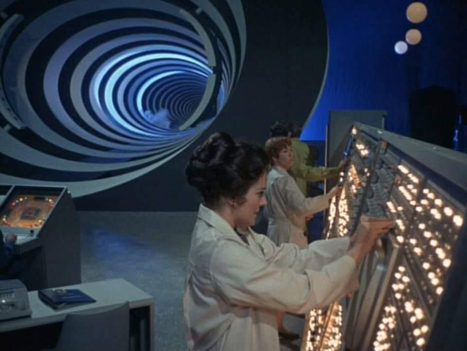
We were being asked to do so [10a] on the belief that it was a great honor; [10b] involved our “unique” skills, and [10c] was important to the welfare of the world, not only for the United States.
Selection Process
“…men, groping in the Arctic darkness, had found a yellow metal…These men wanted dogs, and the dogs they wanted were heavy dogs, with strong muscles by which to toil, and furry coats to protect them from the frost.” - Call of the Wild by Jack London
He told us that we were evaluated and studied from day one.
We were judged in how we handled problems and reacted to situations presented to us. He explained to us that the program was unique and only used the highest caliber of individuals in it. He said that there were many programs in the Navy that no one ever knows or hears about, because it is necessary to keep them secret. This is one such program. We were rated and classified as a perfect fit for this program.
For me, he liked by background.
While others my age were playing football, and being involved in team extracurricular activities, I was alone working. I did not (at the time) enjoy sports. I had to work. (It was one of those fatherly imperatives that my father insisted that I need to do.) I had worked as a volunteer forest fire fighter, a coal miner, a laborer on a railroad line, as well as more traditional jobs such as store clerk, and steel mill roust-about.
He felt that I was best classified as an “independent achiever”. This was opposed to that of a “team contributor”. Most of the world, from business to sports, needed people who work well in a team settings. He had no doubt that I could also succeed in this role, but he felt that I would be limiting my talents.
In hindsight, maybe this was all bullshit. You could tell anything to us and we would of believed it. I have no idea what he must of actually believed, but it is clear to me now; a much more jaded and experienced older man, that what he was giving us was the pitch of a Used Car Salesman. It was all just platitudes and nonsense. Perhaps it was all platitudes; but we were absolutely selected for the role. Whether that was because of our backgrounds or due to some other reason that he could not tell us is really unknown to me at this time.
The program needed individuals who could operate independently, he said.
He stated that the individuals must have [1] a rather high intelligence, and be [2] creative problem solvers. They needed to be able to [3] operate autonomously and independently from any direction.
These individuals must be able to [4] take the initiative when needed, [5] make decisions, and then [6] follow through on those decisions without concern. That was all well and good, but all of us in training fit that profile. We felt so, and told him that exactly.
He responded that we were wrong, and that was not the case at all. Pilots and NFO’s were being trained to operate extremely sophisticated and expensive machinery.
We were (currently) being trained to operate them exactly to specifications, and not to deviate from our orders, assignments and tasks. That we were being trained to be highly trained specialists, with a certain degree of adaptability. And, that we shouldn’t confuse that adaptability with pure independent thought and creativity. That, from the navy’s point of view, was the purview of Strategists, Scientists, and related fields that need this specific skill set to solve problems and adapt to changing circumstances.
In hindsight, knowing what I know now, that was all a full bunch of baloney. He wanted us for whatever reasons they had, and they were going to take us whether we wanted to join or not. There was nothing overly special about us. We were just normal people who just happened to luck into the program because we were at the right time in the right place.
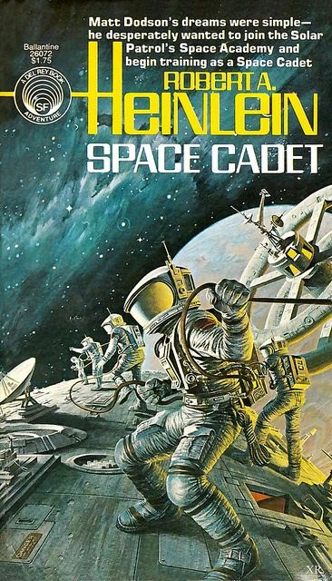
Our selection meant that not only did we quality as adaptable and highly trainable aviation officers, but that we were chosen for [1] our ability to “think on our feet”, [2] to employ strategic thinking and [3] to have an intimate grasp of technological matters. We were also measured for our physical, mental, emotional and social compatibility. In every area, both of us meet the criteria for this program. We were the elite of the elite, and we deserved more than to just be a naval aviator. This was pretty shocking to us, as we felt that the top position available to us was as a naval aviator, and it was the most adventuresome and interesting challenge of our lives.
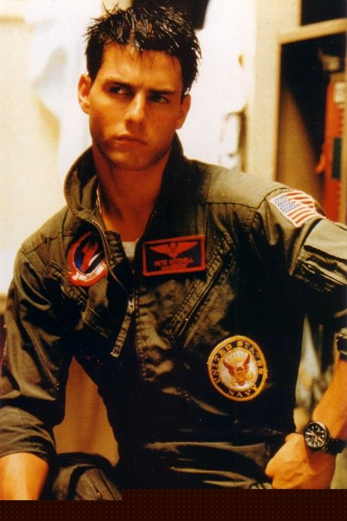
All of this was very ego inspiring, and we ate it up. Being in our early 20’s, with a highly respected Commander telling us these flattering things made a great impression on us. Both of us were still curious, excited, but decidedly unconvinced. We still knew nothing about what we would be trading our valuable commissions and exciting life for. He said many wonderful things to us, but told us nothing. It was all flattery with no substance.
So far, all he told us was we were selected because we fit a profile that was necessary for the program. That it was voluntary, and if we chose not to join it, then they would find someone else to do it. What the program was, and what we would be doing was not disclosed to us, no matter how many different ways we tried asking.
However, for me, I just knew that had to do with something stupendous. I believed the Commander. Maybe it was beyond my comprehension, but I knew that the Navy would have a very special program for us, and all I could think of was the books that I read when younger.
"Robert Heinlein was a kind of early mentor of mine. I started reading his books when I was eight years old. ... I guess I was really getting more of my education out of science-fiction than out of public school. I was reading Ray Bradbury and Isaac Asimov and learning a great deal about the patois of the language itself and how these words were being used to create emotions. I was learning this from writers without even knowing it. ... “ -Jimmy Web
Importance
We wanted to know just how important this program was. At that time, President Ronald Reagan was greatly expanding the military, and space science and technology development on all levels. He was committed to ending the “Cold War” with the Soviet Union, and was aggressively discussing space-based military systems (Star Wars), improved ICBM technology (MX Mobile Missile), actively implementing an aggressive space exploration program through NASA that included a Space Station and Space Shuttles to service it, and an extensive array of new weapons systems and platforms. In our mind, even though it was not explicitly stated, it was obvious that our role would be associated with one of these(new) programs in some way.
“The inspirational value of the space program is probably of far greater importance to education than any input of dollars... A whole generation is growing up which has been attracted to the hard disciplines of science and engineering by the romance of space.” -Arthur C. Clarke, First on the Moon, 1970
But, we needed to hear it directly (and specifically) from the Commander. We had serious questions. [1] Why was the program so important that it would deplete the aviation officer candidate pool to populate it? Why not get an enlisted person? Why not a fleet officer? Why us? [2] What made this program so valuable that it utilize people such as ourselves and yet be kept secret from everyone, including many in the military where it operated? Further, why now? Why not wait until our training was complete, and then just simply assign us to the role so envisioned?
We wanted direct answers to these questions.
We, as Americans, all “knew” that the government had secret programs. After all, how could you explain away a first prize on the television show “The Dating Game” being a trip behind the “Iron Curtain” in East Germany? You just can’t. I well remember watching the show and saying “What the fuck?”. I was, I think, in 6th grade at the time. Later on, much later, the movie Confessions of a Dangerous Mind (2002) came out. It revolves around the claim that Chuck Barris (the creator of the Gong Show) was actually a CIA hit man. In the movie the near exact scene that I watched when I was young was reproduced. (A trip to West Berlin in the movie.) My memory was that it was to East Germany. Hum. Perhaps my memory is faulty. Could be. That happens with age. But what I do remember is me getting up off our brown sofa in the “TV room” and yelling at the TV. “East Germany! What kind of vacation is that?” I yelled. So maybe my memory is faulty, but the memory of me getting up off the couch and yelling at the TV during the Dating Game show about a vacation to a communist area during the cold war was a real one. Now, I really do not know if he really was a CIA hit man, and I really do not care. However, the event that the relates about the first prize in the show was a trip to East Germany actually did happen, and I do remember watching it. In any event, all of us who lived through the “Cold War” knew that the USA had top secret programs.
Again, he spoke in generalities. But, instead of discussing how our participation would benefit the US Navy, or the United States, he discussed how it would benefit the human race and the world. Now, this was unexpected. We had never thought that broadly.
Our mindset was frozen in the cold war mentality of that time.
All our lives we had grown up surrounded with the trappings of the cold war. To us, the Soviet Union was an enemy that needed to be defeated. We watched 007 James Bond in the movie theaters, and watched the Man from U.N.C.L.E. on television. Even the Mad Magazine had a section of “Spy vs. Spy”. We were exposed to television shows like “Get Smart” and “I dream of Genie”. It was inconceivable that we would be participants in a global wide program that was not American centrist.
The reader must recognize that this concept was completely alien to us at the time. We were stuck in the nation against nation mindset. We had been on the receiving end of cold war propaganda for all of our lives.
Therefore, this was a new concept to us and to me in particular. The closest thing that I could come to regarding this new outlook was to refer to the old science fiction novels and pulp stories that I read growing up. Rather than providing me some understanding, however, it galvanized my belief that we were both destined for something great; something stupendous, and something that was at the “cutting edge” of technology.
It just had to involve “outer space”.
“The cadets are expected to renounce their loyalty to their respective countries and replace it by a wider allegiance to humanity as a whole and to the sentient species of the Solar System. They are told the stories of four Patrol heroes/martyrs who exemplify this quality. One of them, Rivera, leaves orders to annihilate his hometown if he is held captive there during negotiations. Heinlein later expanded another of these anecdotes into "The Long Watch". -Wikipedia entry on Robert Heinlein’s “Space Cadet”.
So he told us. He actually told us about the “reality” of the world. However, at the time we did not understand viscerally what he was actually talking about. We just thought that he was speaking in generalities. However, he was not. He was telling us the truth.
- He told us that the world as we knew it did not exist. (He was correct in this, but I did not fully appreciate this fact until much later.) That what we thought was real, and true was wrong.
- He told us, that he would let us in on a big secret; and that is that there are bigger things than nations and wars going on in the world. (This is a direct quote that I have never forgotten. Even though all these years.)
- He said that humans, though history, have been shaped and molded through a planned strategy over the years. (Also a well-remembered quote.)
- It did not matter what country or nation existed, because there was a higher plan behind everything that happens. He told us that nations and countries were temporary. He said that what mattered the most were us as humans, as a race and as a species.
In the article Corporate Feudalism: The End of Nation States by Steve Lovelace writes: “Feudalism developed in the medieval ages when communication and transportation were both scarce and unreliable. Kings had little control over the day-to-day affairs of their kingdoms, and most of the power was held by the lords and barons. Borders, as we know them, did not exist and instead there was property and allegiances… Then over time, advances in technology allowed nation states to form, and national borders became much more rigid. To this day, people still think in terms of nations and borders, but times are changing… The same technological advances that built the nation-state are now leading its demise. The Internet and modern communications allows companies to have employees and suppliers anywhere in the world. Container shipping allows goods to be made in the cheapest places possible. Air travel allow people across the earth to have the same cultural experience, the same points of reference. This means that a company can incorporate in Delaware, design goods in California, produce them in China, ship them on a Norwegian ship registered in Liberia, and sell them all over the world. Tech support can be based out of India, and the executives making the money can keep their money in Switzerland and the Cayman Islands. This kind of thing happens everyday, and the ramifications are just beginning to be felt. Ultimately, this will lead to the return of feudalism… As the power of multinational corporations grows, you will find a weakening of nation states: Corporate oligarchy will be the new norm…”
I understood what he was talking about because I was a Christian, and I understood the hand of God was behind everything. I told him that all he was saying was a repeat of what I heard every Sunday in bible class. But he rebuked me. He told me that this was not what he was saying at all.
Not at all.
He told me that I was not understanding the point that he was trying to make.
He said that key people, over the years, have adjusted the course of history in small ways that made great impacts on the lives of others. Well, I understood that. We all know how Mr. Einstein helped usher in the Atomic age. We know how General George Washington helped forge the United States of America.
But, again he rebuked me.
He said that the significant changes of these men were, indeed important, but that was not at all what he was referring to. Instead he was referring to men, or groups of people that change things without reward, or regard for fame or fortune. These were the true makers and shakers of the world, and it was to these people and of these people that he wanted us to join the ranks of.
He wanted us to be part of the secret and unknown “influencers” of the world.
He repeatedly alluded to the concept or idea that great masses of people, nations and lives were manipulated and guided about by unseen “shepherds” who operated without fame or wealth. These individuals were actually heroes who forged the human race into what it is today and are currently directing the overall growth of the species in many quiet, secretive and hidden ways.
Cowboys
He told us that if we joined these ranks, we will NOT be remembered. He said the general population would never know what we ever did or how important it was for them. Fame was never going to be part of our lives.
Never, ever.
He specifically said that we would join the ranks of the cowboys. This was a well-remembered direct quote that for some reason, I have never forgotten. He told us that cowboys operated independently and often alone.
He made a long and drawn out point of this. This was the key recruitment story or strategy and it was very important that we remember this story. If the reader learns anything at all about what I am trying to relate; then take this home. Those who change the direction of entire nations and people always act independently and alone. They rarely receive huge sums of money; wealth or success for it. They often operate alone and independently without reward or acclaim.
He spent time talking about the cowboys. You know, I wasn’t a Cowboys and Indians fan. I mean , if there was a Western show on television, I would change it. I liked shows about adventure, war and space exploration. Not Cowboys.
Yet, he continued in great detail and quite earnestly. He said that Cowboys had a role in human civilization. They did a dirty and decidedly un-glamorous job with little reward, with no accolades and no appreciation. Yet, it was the cowboys whom opened up the western United States for everyone else to follow. The cowboys were the pioneers, and the adventurers. They were the unsung heroes of America and are now forgotten.
Their role has never been fully appreciated, and they knew it at the time. That is why they would often times yell “Yippee-Kai-Ay” when they were alone herding the cattle over the vast American plains.
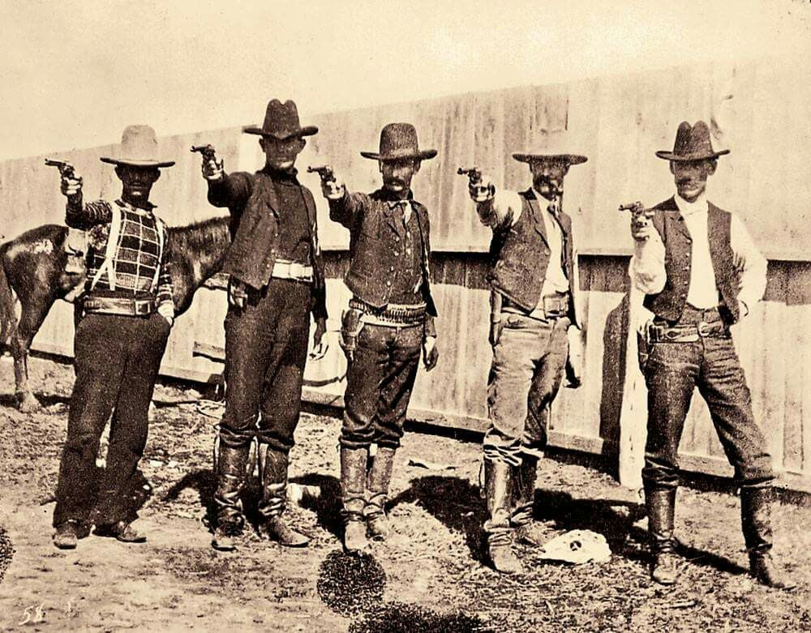
While the Base Commander specifically referred to the American Cowboy, I am absolutely positive that he referred to the entire cadre of outdoorsmen who “opened up the west” for American expansion. These individuals included hunters, trappers, and traders. Consider people like Jack Clark while he was at Fort Walsh, the North West Mounted Police outpost. The force often took on former policemen as civilian scouts, since many of them were intermarried with natives or Métis and thus offered valuable experience, especially during the years of Sitting Bull’s Sioux exile in the Cypress Hills.The Commander continued on. He talked about the history of the world and how special individuals blazed the trails for others to follow. He said these individuals made the (necessary and important) changes and did the “dirty deeds” so that others might have a better life.
"Dirty deeds" - The uncomfortable and often illegal tasks that were necessitated by the overall blueprint as set down by the true and real powers that control the world.
He told us that as Americans we owed our entire existence to but a mere handful of men who cleared the way for others to follow. He said that the lone cowboys and the rugged individualists that supported them were the true and real heroes of the world. He said that they were the makers; the creators, and the backbone upon which rested the basic foundation of our nation.
He told us that those who aspire for fame invariably do so for selfish and populist reasons, and that by the very nature of their works they are nothing more than temporary clowns on the global stage.
This includes everyone who is popularized and promoted by the media. This includes Soopy Sales, Bozo the Clown, The Beatles, and Donny Osmond. It includes Oliva Newton John, ZZ Top, Cher, the cast of “Laugh In”, and Hugh Hefner. It includes Ellen DeGeneres, Justin Bieber, Kim Kardashian West, and Nicki Minaj among many others. These people are just promoted clowns. They distract our attention. That is their purpose. Often they are attractive, and young. Nevertheless, aside from the copious profits that they derive from their transient popularity, they are nothing on the stage of the human species. They are just distractions. They prevent the human consciousness from concentrating at the issues of importance.

He said that America was founded by these kinds of people. He said that the expansion of America was predicated by the actions of these individuals. He said that these people; who they were and what they did, will never be known. They did what they had to do; when it needed to be done. They did so, often under uncomfortable circumstances, and did so to the best of their ability. Whether it was blazing tails through difficult terrain, or fighting hostile Indians, the cowboys did what was necessary. They did it quietly. They did it without acclaim or accolades. And did so with little gain or profit.
He said that we were the cowboys for the future of mankind. (This is an actual quote that he made to us.)
New and Just Implemented
In the middle of his little talk with us, he made a half turn in his chair and looked at the picture of then-President Ronald Reagan on the wall. Our eyes panned right to look at the picture. As he was looking at it, he said “This program comes from the highest levels in our government.”
He paused, and let that statement “sink in”, and then turned back and looked at us straight in the eye. He said that Mr. Reagan personally tasked him to guarantee the success of this program and that it was critically important that it truly be successful.
"Whatever else history may say about me when I'm gone, I hope it will record that I appealed to your best hopes, not your worst fears, to your confidence rather than your doubts. My dream is that you will travel the road ahead with liberty's lamp guiding your steps and opportunity's arm steadying your way." - Ronald Reagan at the 1992 Republican National Convention
He said that the program was new and that we were the first people to enter it. He said that a few other people would join us in the future, but that the elite membership in this program would be limited to only a handful of people; perhaps no more than nine. He said that this was a specific requirement of the program and that this was direct from the president himself.
A brief note; I entered the program, established or at the very least authorized, by Ronald Regan. Thus the quote placed here. Now, reader please take note. When I passed this text on to review, a number of people who read it were completely infuriated that I would place quotes by the former president. They argued that every time they read something about the former president that they would get angry and would lose focus on the points that I was making. They insisted that I give a more “moderate” viewpoint. Their suggestions included deletion of all references to Ronald Regan (impossible, as he was the one who authorized the program), or at the very least, give “equivalent time” to “great” Democrat Presidents. So, as a deference to their requests, here is a link to the article of a speech by one of their “great” presidents; Mr. Obama. The article is titled “Obama warns Americans about too much patriotism — on July 4th weekend!” found HERE.

We asked him about our training to be naval aviators. He replied that our current program would end and be replaced by a completely different program. (Paraphrased direct quote.) However, he couldn’t tell us where we would be trained at, nor anything about the nature of the training.
All this information, most especially the specifics of it, could not and would not, be divulged to us at this time. No matter how many times we tried to ask, and no matter how we tried to force the issue, we never received straight answers to our questions.
He stated that the program was just being implemented, but that it has been “in the works” for a number of years. (Also a paraphrased quote.) I found this point interesting, because the current president had only been in office for just over a year, yet what he said that this program had to originate under the leadership of former-President Jimmy Carter. So, I exclaimed “Oh, so Jimmy Carter set this program up?”.
This time, his answer was even more enigmatic, as he said “No, the former president had nothing to do with this program”.
Presidents; we all have such hopes for our leadership. But it is all an illusion. It’s a real problem when a pernicious myth subverts reality. Everybody believes that the institution of government is like Camelot—a wise ruler assisted by noble paladins. Maybe that meme gained traction in recent times with John Kennedy and his good-looking wife, Jackie. They looked like an ideal couple. They weren’t. But they were a lot better than what followed for the next 50 years… The fact is that the high levels of government do get people with high IQs. They can pass tests. They’re skilled at manipulating both laws and people. But they tend to be of low moral character, number one. Number two, despite their high IQs, they’re actually quite stupid. At that time, I wasn’t thrilled with life in the Carter years, but I didn’t believe there was an alternative. Under Carter, there were gas lines, days you could buy gasoline and days you couldn’t. The economy was sputtering. We had a president whose idea of securing the release of 52 American Embassy hostages from Iran’s new Islamic fundamentalist regime was to not leave the White House Rose Garden. (It was actually called his “Rose Garden strategy.”)
At that moment, at that point of confusion, it slowly dawned on me that the true and actual chain of command for certain secret or special programs lie hidden from us. If it wasn’t started under former president Jimmy Carter, then who initiated it? Was it an even earlier president or someone not even connected with the presidency?
Indeed! Who did authorize the program? Was it authorized by presidential decree prior to President Jimmy Carter? Was it authorized outside the chain of command in the United States government itself? Was it authorized by a political party with a unique agenda outside of the American Presidency?
The question remains to this day, clear as day. As I have found piece-meal answers to these questions over the years, none of them were ever crystal clear. To me, it seemed at least, to be a continuous progression of actions that somehow operated independent of any individual president.
Unknown Mission Statement
It became obvious to us that he was telling us nothing. We had no idea what we would be doing, or who we would be reporting to. We didn’t know where or when we would begin training, and his answers were lacking in substance, and were intentionally vague. So I tried to get some kind of handle or understanding of what our tasks would be. I asked him what we would be doing. And, he replied that we might never know what our mission was.
Again, this is an actual quote.
Now of all the points and statements that he was making, this was the most confusing. How could we enter a program and not know what it all about? How could we do something and never know what we were doing? The longer he spoke, the more confused we got. It seemed surreal and strange, and all too vaporous for comfort.
In the program for life
If all what he told us wasn’t confusing enough, he started to lay down some interesting responses to our queries. One of the most interesting statements that he made was that we would be in the program for the rest of our life, and that once we join there was no going back.
It sounded so much like joining a mafia group. What kind of military program is like that? It was all mysterious. In fact, the entire discussion had the feel of great and grave importance, but in the end, we truly knew nothing at all about it.
Life.
We would be in the program for the rest of our lives.
We knew that once we gave our oath of service to the United States Navy that they pretty much could do with us what they wanted. Nevertheless, we always knew that eventually, if everything went well, we could be retired. People retire. They leave their former work and settle down. It happened to my father and my uncles. It happened to my grandfathers. What kind of organization keeps you in it for life?
The mysteries multiplied. This was totally unlike anything that we could conceive of. It was unlike anything that we had ever seen on television, or in the movies. Not one single war movie or science fiction movie that I had ever seen discussed a life-long commitment to a secret project or program. The closest thing that ever came to it was working for some kind of arch-villain whom 007; James Bond, would have vanquish. It was big. It was serious. It was beyond our understanding.
So this was a major commitment that we were getting involved into. Not only would we no longer be naval aviators, but what we would be doing would be for the rest of our lives. Therefore, it became clear to us that this would be a turning point in our life. But would it be a good decision? Would it be truly noteworthy and especially important, and crucial to the betterment of the world?
Operate independently without support
We wanted to know where we would be training, and what kind of assignments and locations would we be at. Again, his responses were far from reassuring to us. He bluntly told us that we would operate independently and without support. That when we were on assignment, it would be up to us to create our support organizations and our success or failure would be a function of how well we build up this network. It was frightening, and exciting at the same time. We were certainly intrigued, but honestly more curious than ready to abandon the life that up until then was our destiny.
“…Yes, there are numerous psychological tests. I was chosen based on my educational background and military service. The training lasted about two years. There is a great deal of physical training to counter the physical effects of distortion. They were also looking for drivers who had a fair amount of self-sufficiency and an ability to function under extreme isolation and confinement. “ -John Titor
Nothing fit together in the neat and clean and orderly world that we had come to expect. In fact, putting it all together, he was offering us nothing less than throwing us out on the street, to labor alone and isolated without guidance, leadership and direction. His answers were discouraging and flew as well as a lead balloon. Nothing made sense, and more questions we asked, the less we knew. Obviously our expectations were out of alignment with the reality as described to us.
A top secret program
He looked at us again. There were two of us chatting with him, and when he answered a question brought up by one of us, he would devote his full attention to that person. Then switch to the other person. His gaze was intense, and his continence was serious. Even though his answers were pathetic, there was no question that he had our attention and our interest.
When he talked to us, it was with full attention. He was kind but very serious, and his actions and demeanor reflected that. I have not, since that time, been exposed to such an intense level of kindness and authority. I felt like he was talking to us like a wise older uncle more than a base commander and was presenting to us a once-in-a-lifetime opportunity. It was one that we shouldn’t take lightly and it was one that needed our undivided, intense attention.
“There must be a few times in life when you stand at a precipice of a decision. When you know there will forever be a Before and an After...I knew there would be no turning back if I designated this moment as my own Prime Meridian from which everything else would be measured.” ― Justina Chen, North of Beautiful
Essentially, this program could be anything at all.
The only issue was the secrecy surrounding it. He stated that since it was so important, and so special, it had to be maintained as a secret program. He stated that we would be exposed to technologies, people, ideas, things and events that were fantastic, and must be kept secret.
It was indeed bitter-sweet. There was a very real level of excitement, like he knew things that we did not know, but also a very strong level of underlying sadness. Like he knew things that he could not tell us. It was like telling someone that they would have access to a Ferrari for the rest of their lives, but that they would never be able to get a driver’s license to drive it.
He explained that this secrecy was important to maintain the integrity of the program and was necessary for the safety of the world, not only for the safety of the United States. Secrecy. This was a “secret” program.
The reader might get the impression that he spent a half an hour explaining this to us. But that is incorrect. He did not. He mentioned the secrecy of the program in a quick and brief manner and never returned to it. In fact, as I recall, the sole highlight of the discussion regarding secrecy was the statement; “Both of you do realize that this is a very secret program, don’t do?”.
We would be pioneers in many ways, and that it would be extremely critical that we enter secretly and quietly. No one must know that we were members in this program, and no one must know what we were doing.
At that moment I started to daydream a little bit.
I imagined telling my parents that I had joined a Top Secret program. I imagined what my mother would think. I pictured my father sitting down in his Lazy-boy chair and reading a newspaper (Odd because we didn’t have a Lazy-Boy chair.). I imagined me telling him and him looking up and his mouth opening up a crack.
These thoughts were soon replaced with other thoughts.
I suddenly started to doubt my decision to fly planes. I suddenly started to get a fear of heights. I began to think how stupid it would be for me to fly when I was afraid of high places. Yes. That was it… I was afraid of heights. Why fly when I could fall? Flying was not for me. No. The only option available for me was to join this very special program. I had to join it.
I had to.
This mixture of imaging praise from my parents and a new-found fear of heights flooded my mind. I no longer paid attention to what the Commander and Sebastian were talking about. I was wholly absorbed in my own private thoughts.
I suddenly snapped back to reality, and started to listen to what the Commander was saying.
He explained to us that he knew our profiles. We entered the navy to fly, but that our motivation and patriotism profile strongly indicated that we felt that we were doing so for a higher purpose. He did know that we believed in a higher purpose and calling. He understood this and he understood us. He knew what interested us and wrapped up an enigma and mystery on a silver platter, tied a bow around it and presented it to us.
The experience of a lifetime.
He said that we would experience an adventure unlike anything that we’d ever think of. He said that it would be “the experience of a lifetime”.
“The experience of a lifetime”.
When someone says that you would have the “experience of lifetime” it directly implies that you would have the opportunity to experience something [1] that few people would be exposed to, [2] something that is special or unique or great or wonderful, and [3] something that would be significant in some way to your personally.
Over the years, when I have told my story to friends and family, the result is always the same. I hear the same response. “If it was me, I would have never done what you did.” And, after hearing this response, over and over again, I come to the conclusion that perhaps either we were stupid and wrong, or maybe I have been unsuccessful in conveying how persuasive the Commander was.
This is a curious thought and of rather great importance. So, perhaps I should elaborate a little bit more on it. There was no question that we weren’t stupid, we might have been naïve however. But we were certainly not stupid. Both of us not only possessed difficult technical degrees in the engineering sciences, but had to pass a most rigorous series of evaluation tests to obtain the role as Naval Aviators.
The reader must remember the context where all this was taking place. They must understand who we were and where we were and what the conditions were at that time in history.
The reader must remember that both of us had just completed a very difficult college and university four year curriculum. My graduating class had perhaps 30 people of the over 200 that I started with four years earlier. It was difficult, rough and (kind of) boring subject to study. While our other class members were going to the discos (very popular at the time) we stayed behind and studied. We were the nerds of the nerds.
Yet, we graduated, but not only that.
We applied to an even more difficult program; one to become a Naval Aviator. Acceptance was only the start. Every day, at the base during training, we were reminded that we were [1] the elite and that we were being trained to operate the world’s most technologically advanced and dangerous aircraft, and to do so under the most difficult of circumstances.
Then one day, the [2] highest ranked and most important person in our chain of command, selects us and has a [3] meeting with us.
During that meeting he tells us that [4] the President of the United States specifically asked him to [5] pick us and put us on a [6] top secret mission, one that was [7] new and had no equal in the history of mankind.
Further, he told us that we [8] would be doing this for not only the United States, but for the world itself. We were told that we could opt out, and continue a normal career path as naval aviators, but if we did so, we would [9] miss out on the opportunity and “the adventure of a lifetime”.
“This is your last chance. After this, there is no turning back. You take the blue pill—the story ends, you wake up in your bed and believe whatever you want to believe. You take the red pill—you stay in Wonderland, and I show you how deep the rabbit hole goes. Remember: all I’m offering is the truth. Nothing more.”
Of course we accepted, and I was the one who decided first.
My mother always told me that if a doorway opens in the hall of life, you owe it to yourself to walk into the room. The point came to my mind, and which influenced my decision was simple. Did I want to spend the rest of my life wondering what could have been? Was this an opportunity given to only a handful of people and would I end up spending the rest of my life wondering, in a wistful way, what could have been?
Perhaps I was young and naïve, but it was a decision that I made. Good or bad, right or wrong, given my mind set at the time, and the opportunity as presented, I decided to accept the proposal and volunteer into the program.
It took a while longer for the other candidate; Sebastian, to decide. He had more questions to ask and needed a little bit more persuasion to decide. They talked back and forth for around another seven to ten minutes longer. Eventually, the concerns were all addressed and eventually both of us decided to volunteer.
Signing Up
“…I shall be telling this with a sigh Somewhere ages and ages hence: Two roads diverged in a wood, and I— I took the one less traveled by, And that has made all the difference.” -Robert Frost (1874–1963) The Road not Taken.
So, after much consideration, we both agreed.
He said “good”, and reached in the top right drawer of his desk. There he removed two already prepared documents. He paused and looked at them for a minute. Then, took the first one and put/slid it in front of me on the desk. Then, he took the second document and slid it in front of Sebastian.
The paper was a plain, white navy memo with standard adornment. In it, aside from the cryptic designation wordage in the header, were two simple paragraphs. There was nothing more to it. The letter was functional and basic. Essentially it was an agreement to that basically stated that we left one program to join another program. The new program was unnamed, but had an alpha-numerical designation instead.
He then produced two pens and placed them smartly next to the papers. He told us to look over the document and make sure that our name was spelled right, then if we agree to volunteer into the program, to sign it.
“Yield to temptation, it may not pass your way again.” -Lazarus Long; a fictional character created by Robert A. Heinlein.
I had already decided to sign it, but I hesitated realizing the gravity of the situation. I looked the paper over and checked my spelling. I exhaled and easily and quickly signed my name in the manner that I did so at that time. I then slid it back to him and put the pen back on the desk. I then leaned back in my chair and briefly closed my eyes and thought “DONE!”.
My colleague; Sebastian also signed his. The Commander picked it up; looked at my signature and then at the signature on my colleague’s paper and stood up. He then shook each of our hands with a warm smile and again said “good”.
“The hardest thing about the road not taken is that you never know where it might have led.” ― Lisa Wingate, A Month of Summer
That is exactly what he said. He did not say “welcome to the organization”. He did not say “I am glad you agreed.” No, his answer and response was a very terse and simple one. He simply said “good”.
He then gathered both papers together. He returned the pen to the middle drawer in his desk. Shut it, and then looked at us again and smiled. He then got up. After he stood up, we both stood up as well. He walked around from the back of the desk and left it (to our right) and walked over to a collection of tall file cabinets to the left of the door.
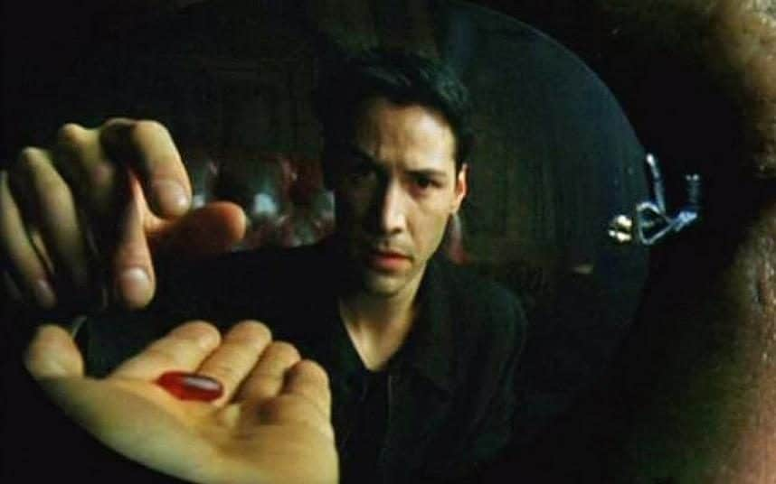
We were both excited. Or, at the very least, I most certainly was. It was a Eminem – Lose Yourself moment. That was it. I had been offered an opportunity to join this very special and secret program, and I accepted. Who knows what it would be. However, one thing was certain, only a small handful of people would get the opportunity to participate in it.
And I was one of them.
Smiling and nodding in an affirmative way, he stood up. He then walked out from behind the desk, and went to one of the file cabinets against the wall. He unlocked the combination lock that held the long “L” shaped bar and slid the bar out. Opening a drawer he removed two folders that were resting on top of the other folders. Put our signed agreement in each one, then placed the folders in their ordered location. He closed the drawer, replaced the bar, and secured it with the lock.
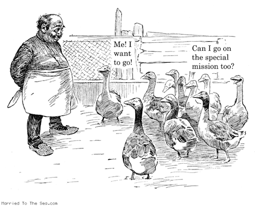
We were all standing at that point, and I asked “When do we start?” He reached over to the coat rack where his peaked hat hung and put it on his head.
“Now.” He replied.
He unlocked the bolt on the door, and turned around to us. (This sounds very “Hollywood”, but this is exactly what occurred.) He turned around at the door and looked at us.
He looked at Sebastian, and then to me RIGHT IN THE EYES.
- He said that he wanted us to always remember [1] what he just said to us.
- He wanted us [2] never to forget who we are, and very importantly [3] what we are.
- He said that [4] life has a way of making you forget things, and [5] other people will contribute to that.
Boy, isn’t that the truth! It is exactly these words that ring true in my head each and every time I am criticized by others for my decisions, my actions, and what I endured as part of this program. When people mention my retirement and how I was retired and what I am now considered as within the monitoring program, I am reminded of this statement. It is when I have to endure constant harping critical statements from do-nothings who never experienced the kind of experiences that I had to endure that these words rang true and kept my emotions and feelings buoyant.
- He told us that we are [6] just now starting on something very important, and [7] other things will make it seem trivial. But it isn’t.
- He told us [8] to remember the cowboys, and most especially their cry of independence.
What do Americans know of independence? Really? Not much. Consider the facts. The colonists under the king and parliament could own property. Meaning really own it. Yeah. They were not required to send annual/regular payments in to the king in order to be permitted to remain in homes for which they’d paid or carriages they’d purchased. We are. Yes, today, we are. The colonists – under the king and parliament – had an unquestioned right to own and bear (carry on their persons) firearms. Without permission. Are we allowed such freedom? The king and parliament did not concern themselves with the colonists’ “safety.” If a colonists wished, he could ride his horse as fast as he liked, eat what he liked, smoke what he liked. No authority pestered him about his choices. He was not told with whom he must do business, or forced to build his house a certain way or forbidden from planting a vegetable garden on his property. He was not compelled to purchase insurance of any kind whatsoever. In most parts of the Land of the Free, you and I are not even free to purchase fireworks to celebrate our supposed freedom. We’re allowed “safe” sparklers and such. But nothing that flies or explodes. To possess or use such constitutes a crime in most states. The irony of this is lost on most people. I cry...CRY for the loss of FREEDOM!
- He specifically told us to remember what he said whenever [9] we hear the term “yippee kai- yay”.
Finishing up
He opened the door and we followed him out of the office. He turned left. We turned left.
We followed him down the thin corridor.
Walking down the corridor we exited out the back door, and found ourselves outside on a small cement loading dock.
We walked down some cement steps, cut across the asphalt parking area, and went next door to the main building in the complex.
It was a large cement and pole-construction warehouse set in among the trees.
We entered a side door and walked in…
Next Steps
What came next was an introductory lecture on SAP’s, a period of “training” and probe implantation, and some other events that were fantastical.
These will be elaborated upon in another post.
You can move on to the continuation of this narrative HERE.
What did it all mean?
Did you notice that NOT at any time did the commander mention extraterrestrials, UFO’s, or anything science fictional in scope. Nope. Not once.
It was promoted to us on a personal and visceral level. It was promoted to us as something that ONLY we could do. It was promoted to us as something very important, and very secret…
That has never changed.
It was really so different from what I knew, that it boggles the mind. I signed up for something really, really different. At a time in the world that was preoccupied with the cold-war, the banning of Tab on store shelves, and “Staying Alive”, I joined MAJestic.
Over the months and years that followed I was slowly immersed into a new reality, or maybe better stated as a new perception of realities that merge into one that I occupy at any given moment.
This program involved the MWI. It involved world-lines. It involved creatures, “others”, and extraterrestrials. My role involved observation and participation, as well as anchoring. It’s all “off the charts”. Because the real purpose of why we are humans and living on this planet is obscured from us.
My role was NOT fun.
Not that I am complaining, mind you. The life we lead is the life that we manufacture for ourselves. Yet, at the same time, the role that I took on had some unpleasant attributes. Some and the trends behind them really, really, REALLY sucked. But, I do have the right to bitch about the uncomfortable aspects. You know, like when you stub your toe, and shout “FUCK!”. It’s like when you get a job at a steel company, and for the first three months you are knee deep in human shit shoveling it out of a century-old waste basin.
Hum. Perhaps, and maybe to understand my role – the one that I had agreed to, you need to understand the role that John McClane had in the various movies…
John McClane: Yippee-ki-yay, motherfucker!
And when I look at my life, and the apparent endless, heck even ridiculous repeats of just bad-luck, bad-timing, and bad-situations, I see this…
John McClane: Oh man, I can't fucking believe this. Another basement, another elevator. How can the same shit happen to the same guy twice?
You must understand that I had and held a role where I was the designated “human”. I had to be a representative sample. What was I?
I was the electronics laden probe that plunged into the dangerous star, I was the camera that was tied to the the necks of wild panthers. I was the robotic probe exploring the hidden passages in the Great Pyramid.
I was an artifice.
I was the trained and provided with devices and mutations so that I could transmit what I would experience; the life within our reality. And while I was experiencing it, so were “others”. Yup, maybe they just sat there in front of their fucking version of a television set, eating their fucking version of popcorn, and watching how life is for an “average white Joe” in America. Maybe…
Who the Hell knows?
What I know is that I had to experience life. That is, “life” as a “typical” American. So sure enough, if there was a down turn in the economy, I was the first to feel it. When there was a major event or fire, earthquake, tornado, or ice storm. Yup, that was me smack damn in the middle of it.
It’s not just that for Pete’s sake…
If there was something that I wanted to do or be part of, sure enough there would be an effort to ban it, tax it, regulate it or make it difficult to obtain. Suddenly 200,000 lose their jobs, you can sure bet that I was one of them. Hey, you want to have a simple burger and a large coke, sure enough someone wants to ban the jumbo size. Yup, that was my life.
Joining MAJestic was like having a “Kick Me” sign tattooed on my back.
So after numerous firings, all on the various Christmas eve’s, and I’m thinking, “what’s the fucking odds?” only to be fired on yet a fourth Christmas eve time… and when I was fired, yet again… come on! Yet again, on Christmas Eve at the company Christmas Eve party, this comes to mind…
John McClane: Just once, I'd like a regular, normal Christmas. Eggnog, a fuckin' Christmas tree, a little turkey. But, no! I gotta crawl around in this motherfuckin' tin can!
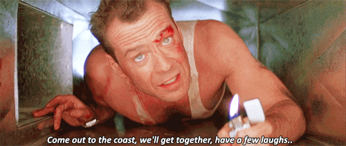
And, perhaps this might give you a better idea of what it fucking feels like to be me.
John McClane: Do you know what you get for being a hero? Nothin'. You get shot at. Pat on the back, blah blah blah. 'Attaboy.' You get divorced... Your wife can't remember your last name, kids don't want to talk to you... You get to eat a lot of meals by yourself. Trust me kid, nobody wants to be that guy. (I do this) because there is nobody else to do it right now. Believe me if there was somebody else to do it, I would let them do it. There's not, so (I'm) doing it. That's what makes you that guy."
Yeah, being so “connected” has some advantage. It’s a two-way street. Don’t you know. What others can observe and experience, I can sort of tap into the feedback loop. That gives me insight into the life of the hosting party. So I have some knowledge and some understandings.
Yes, I do. Some. Mind you, some.
Yeah, and the “others” allow me to talk about it. Seriously!
A Word about “The Others”…
Yet, being so connected is so different. It is like nothing that we can even compare and discuss.
We watch science fictional movies about extraterrestrial life. We can see “Klingons”, “Romulans” and other species interact with humans. But they are portrayed as mostly human with some minor cultural differences and different faces. You know, Hollywood does not have a clue.
Hollywood somehow thinks Humans and Extraterrestrials are like the difference between an American and someone from France. When the truth is, it is more like the difference between a human and a sweet potato.
Different species have different senses and different brains. Which means that the perceptions, and the interpretations of the perceptions are different. On top of that, the way that the physical reality connects to the non-physical reality differs as well. In such, the ability to understand our reality differs.
One species might be like us humans; we only know what we sense. It is a single reality. It is one that looks like a straight arrow of time where everything follows certain laws and rules of behavior.
To another intelligent species, one that can better tune-in to the non-physical reality would perceive the world, universe and reality quite differently.
I was given that ability.
Take Aways
- I was in training to be a Naval Aviator once I graduated from University as an Aerospace Engineer.
- While in training, I was pulled out and asked to join another program.
- It was promoted to me in a visceral way so as to help mankind.
- This program was under the MAJestic umbrella.
FAQ
Q: Were there other tests or qualifications that you needed to pass before your meeting with the Commander?
A: Yes. This is covered elsewhere. The events tested my brain, my ability to think independently and other attributes.
Q: Have you seen Sebastian since?
A: After our meeting with the commander, we attended the SAP lecture together, both had the probes installed together, and entered the transport area together. After that, I saw him again at China Lake Naval Weapons Center when we had our probes calibrated and we were trained for MWI egress. Then again, I saw him during our mutual retirement at Pine Bluff ADC. I have not seen him since retirement.
Q: Do you have regrets?
A: Yes and no. All people have regrets on decisions that they have made. In regards to this, it is bitter sweet. I fucking hated retirement. It was unfair, and unnecessary.
I am not rich, and just barely get by. But on the other hand, I don’t need a lot of money either. I live simply and have a rather calm and peaceful life.
Life is what we make it. There are good things that I like, and bad memories that I have collected over the years. All in all, I think that I am a typical man with typical experiences.
Q: What did your classmates think when you returned back to the barracks?
A: That is a long story and is covered elsewhere.
Q: Did you have to sign any NDR’s or legal papers?
A: No. Violations of MAJestic will not go through the (heh heh) legal channels. The legal system is used during retirement and for other civil proceedings. MAJestic can easily terminate my involvement in numerous ways. They control my memory, and if they wanted, can also control my MWI slides. Trust me, you do NOT want to piss off anyone in MAJestic.
MAJestic Related Posts – Training
These are posts and articles that revolve around how I was recruited for MAJestic and my training. Also discussed is the nature of secret programs. I really do not know why the organization was kept so secret. It really wasn’t because of any kind of military concern, and the technologies were way too involved for any kind of information transfer. The only conclusion that I can come to is that we were obligated to maintain secrecy at the behalf of our extraterrestrial benefactors.


MAJestic Related Posts – Our Universe
These particular posts are concerned about the universe that we are all part of. Being entangled as I was, and involved in the crazy things that I was, I was given some insight. This insight wasn’t anything super special. Rather it offered me perception along with advantage. Here, I try to impart some of that knowledge through discussion.
Enjoy.


MAJestic Related Posts – World-Line Travel
These posts are related to “reality slides”. Other more common terms are “world-line travel”, or the MWI. What people fail to grasp is that when a person has the ability to slide into a different reality (pass into a different world-line), they are able to “touch” Heaven to some extent. Here are posts that cover this topic.


John Titor Related Posts
Another person, collectively known by the identity of “John Titor” claimed to utilize world-line (MWI egress) travel to collect artifacts from the past. He is an interesting subject to discuss. Here we have multiple posts in this regard.
They are;